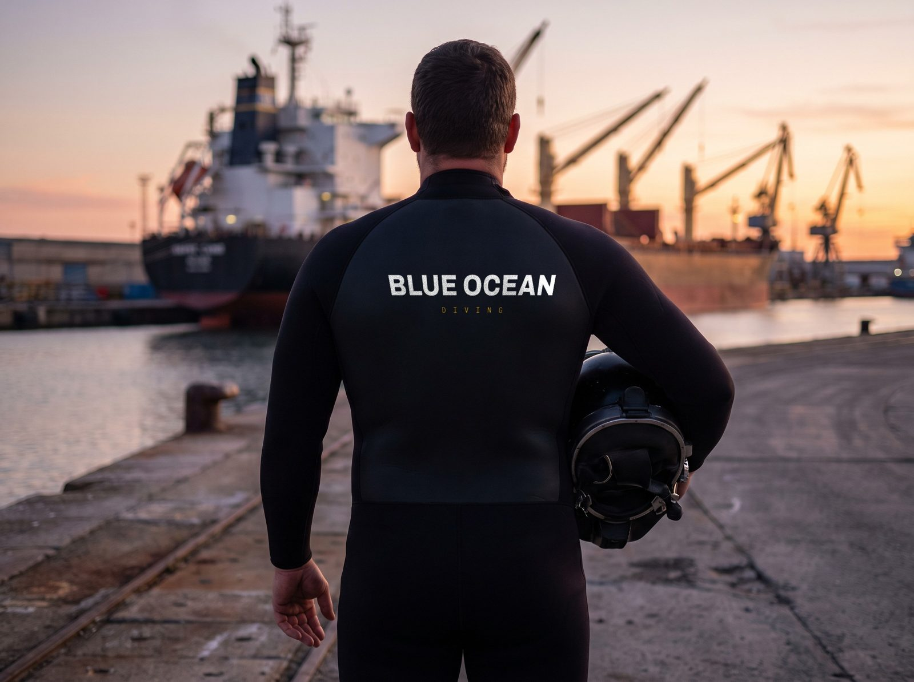
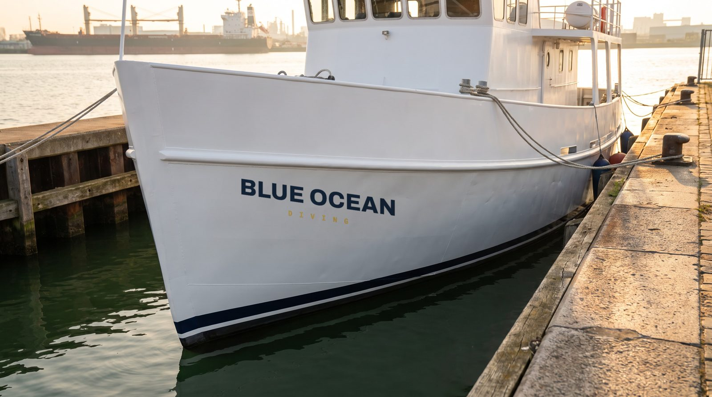
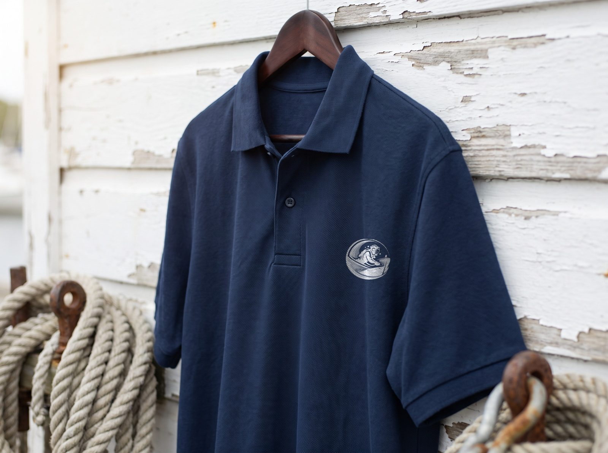

Isso nasceu de um pedido de vocês: a Mari pediu pra apagar o nome da empresa antiga do macacão numa foto. Ou seja, a equipe está trabalhando com roupa de outra marca.
Com uniforme próprio o problema some na origem: a próxima foto já nasce certa e ninguém precisa retocar nada. E foto de operação é o ativo que mais falta pro site de vocês.
Abaixo vai posição e medida de cada aplicação, no formato que fornecedor de uniforme e de plotagem usa.
A regra é uma só: o brasão vai no peito à esquerda, o nome vai nas costas. Na água, o que aparece na foto é sempre as costas do mergulhador, então é lá que o nome tem que estar grande.
↳ O brasão só existe em PNG de 256 KB. Bordado e serigrafia grande precisam de vetor (AI, EPS ou SVG). Perguntar ao Felipe se quem desenhou tem o arquivo aberto, senão o bordado sai com a borda serrilhada.
A embarcação de apoio aparece no cais, do lado de navio de armador. É mídia gratuita que hoje está em branco. E a caixa de equipamento identificada evita sumiço no porto, que é um problema real de operação.
Visualização das aplicações, pra sentir a marca no mundo real antes do fornecedor. As medidas valem as dos desenhos técnicos acima.



↳ Visualização. A foto é gerada; a marca é aplicada com a geometria real por cima.
Todas amostradas do logo de vocês. O dourado é o ouro da hélice depois do polimento: não é uma cor escolhida, é o metal da própria peça, polido. Que é o serviço de vocês.